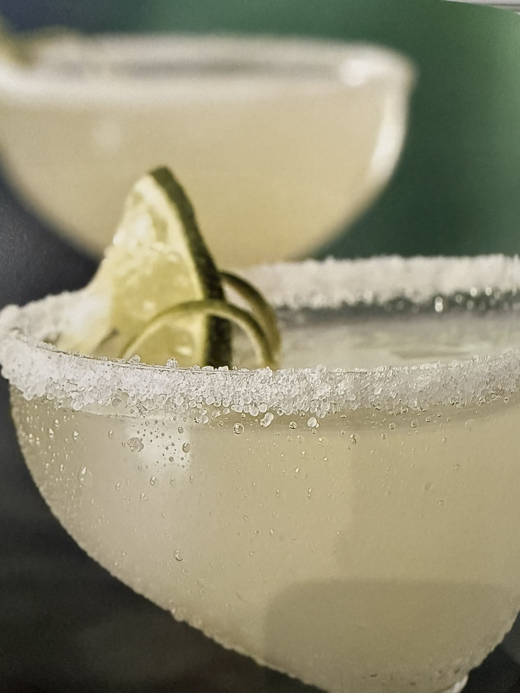

Classic Margarita

The classic to end all classics. It's not that every Margarita is perfect,
but as long as the basic elements are there, chances are you're going to
be just fine.
Ingredients
- Salt
- 2 parts Jose Cuervo Gold Tequila
- 1 part Triple Sec
- 1 part Lime Juice
- 1 Lime Slice
Steps
- Salt the rim of your margarita glass
-
Add the tequila, triple sec, and lime juice to a cocktail shaker filled
with ice. Shake well
-
Strain the resulting mixture over ice int your Margarita glass. Garnish
with a lime slice.
Return Home